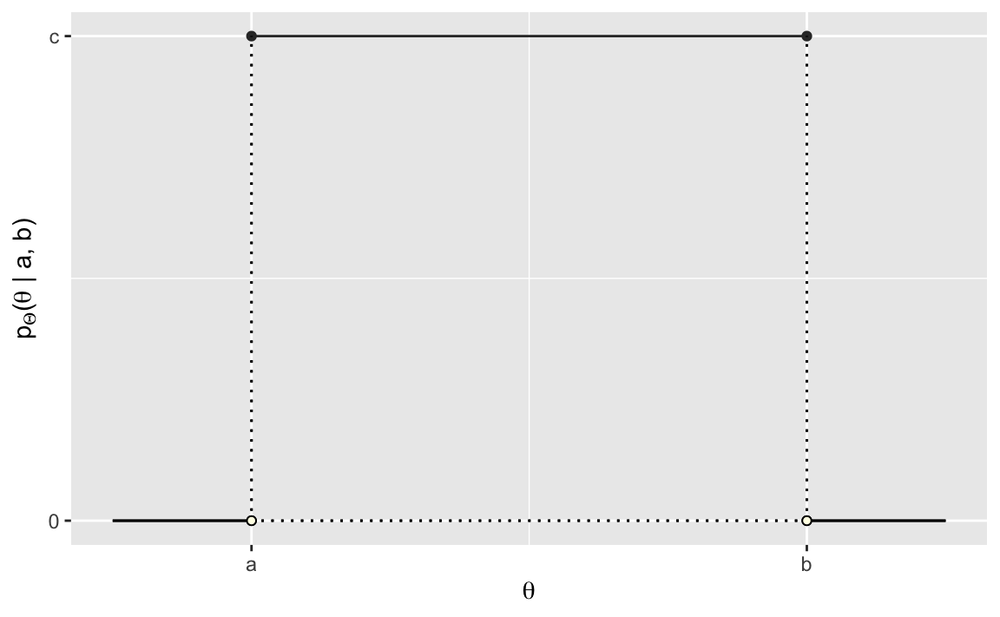
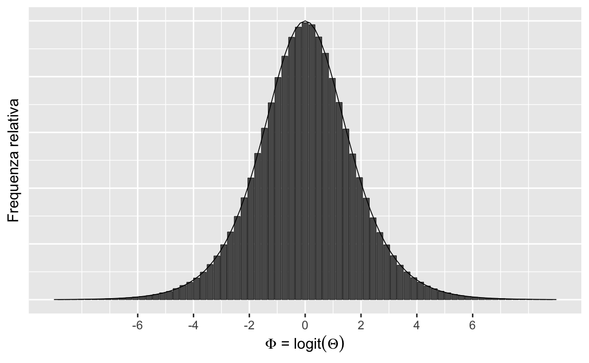

12 La densità di probabilità
Finora abbiamo considerato solo variabili casuali discrete, cioè variabili che assumono solo valori interi. Ma cosa succede se vogliamo usare variabili casuali per rappresentare lunghezze, o volumi, o distanze, o una qualsiasi delle altre proprietà continue nel mondo fisico o psicologico? È necessario generalizzare l’approccio usato finora.
Le variabili casuali continue assumono valori reali. L’insieme dei numeri reali è non numerabile perché è più grande dell’insieme degli interi.1 Le leggi della probabilità sono le stesse per le variabili casuali discrete e quelle continue. La nozione di funzione di massa di probabilità, invece, deve essere sostituita dal suo equivalente continuo, ovvero dalla funzione di densità di probabilità. Lo scopo di questo Capitolo è quello di chiarire il significato di questa nozione, usando un approccio basato sulle simulazioni.
12.1 Spinner e variabili casuali continue uniformi
Consideriamo il seguente esperimento casuale. Facciamo ruotare ad alta velocità uno spinner simmetrico imperniato su un goniometro e osserviamo la posizione in cui si ferma (individuata dall’angolo acuto con segno tra il suo asse e l’asse orizzontale del goniometro). Chiamiamo \(\Theta\) la variabile casuale “pendenza dello spinner” – Figura 12.1. Nella trattazione seguente useremo i gradi e, di conseguenza, \(\Theta \in [0, 360]\).
Cosa implica per \(\Theta\) dire che lo spinner è simmetrico? Possiamo dire che, in ciascuna prova, la rotazione dello spinner produce un angolo qualunque da 0 a 360 gradi. In altri termini, un valore \(\Theta\) compreso tra 0 e 36 gradi ha la stessa probabilità di essere osservato di un valore \(\Theta\) compreso tra 200 e 236 gradi. Inoltre, poiché 36 gradi è un decimo del percorso intorno al cerchio, la probabilità di ottenere un qualsiasi intervallo di 36 gradi sarà sempre uguale al 10%. Ovvero \(\mbox{P}(0 \leq \Theta \leq 36) \ = \ \frac{1}{10}\) e \(\mbox{P}(200 \leq \Theta \leq 236) \ = \ \frac{1}{10}\).
È importante notare che le probabilità precedenti non si riferiscono al fatto che \(\Theta\) assume uno specifico valore, ma piuttosto all’evento di osservare \(\Theta\) in un intervallo di valori. In generale, la probabilità che la pendenza \(\Theta\) dello spinner cada in intervallo è la frazione del cerchio rappresentata dall’intervallo, cioè,
\[ \mbox{P}(\theta_1 \leq \Theta \leq \theta_2) = \frac{\theta_2 - \theta_1}{360}, \qquad 0 \leq \theta_1 \leq \theta_2 \leq 360. \]
La ragione di questo è che le variabili casuali continue non hanno una massa di probabilità. Invece, una massa di probabilità viene assegnata alla realizzazione della variabile casuale in un intervallo di valori.
12.1.1 Il paradosso delle variabili casuali continue
Nel nostro esempio, la pendenza dello spinner è esattamente 36 gradi; ma avrebbe anche potuto essere 36.0376531 gradi, o qualunque altro valore in quell’intorno. Qual è la probabilità che la pendenza dello spinner sia esattamente 36? Paradossalmente, la risposta è zero:
\[ \mbox{P}(\Theta = 36) = 0. \]
Infatti, se la probabilità di un qualunque valore fosse maggiore di zero, ogni altro possibile valore dovrebbe avere la stessa probabilità, dato che abbiamo assunto che tutti i valori \(\Theta\) siano egualmente probabili. Ma se poi andiamo a sommare tutte queste probabilità il totale diventerà maggiore di uno, il che non è possibile.
Nel caso delle variabili casuali continue dobbiamo dunque rinunciare a qualcosa, e quel qualcosa è l’idea che, in una distribuzione continua, ciascun valore puntuale della variabile casuale possa avere una massa di probabilità maggiore di zero. Il paradosso sorge perché una realizzazione della variabile casuale continua produce sempre un qualche numero, ma ciscuno di tali numeri ha probabilità nulla.
12.2 La funzione di ripartizione per una variabile casuale continua
Supponiamo che \(\Theta \sim \mathcal{U}(0, 360)\) sia la pendenza dello spinner. La funzione di ripartizione (ovvero, la distribuzione cumulativa) è definita esattamente come nel caso delle variabili casuali discrete:
\[ F_{\Theta}(\theta) = \mbox{P}(\Theta \leq \theta). \]
Cioè, è la probabilità che la variabile casuale \(\Theta\) assuma un valore minore di o uguale a \(\theta\). In questo caso, poiché si presume che lo spinner sia simmetrico, la funzione di distribuzione cumulativa è
\[ F_{\Theta}(\theta) = \frac{\theta}{360}. \]
Questa è una funzione lineare di \(\theta\), cioè \(\frac{1}{360} \cdot \theta\), come indicato dal grafico della Figura 12.2.

Possiamo verificare questo risultato mediante simulazione. Per stimare la funzione di ripartizione, simuliamo \(M\) valori \(\theta^{(m)}\) e poi li ordiniamo in ordine crescente.
M <- 1000
theta <- runif(M, 0, 360)
theta_asc <- sort(theta)
prob <- (1:M) / M
unif_cdf_df <- data.frame(
theta = theta_asc,
prob = prob
)
unif_cdf_plot <-
unif_cdf_df %>%
ggplot(aes(x = theta, y = prob)) +
geom_line() +
scale_x_continuous(breaks = c(0, 90, 180, 270, 360)) +
scale_y_continuous(breaks = c(0, 0.25, 0.5, 0.75, 1.0)) +
xlab(expression(theta)) +
ylab(expression(F(Theta)(theta)))
unif_cdf_plotAnche con M = 1000, tale grafico è praticamente indistinguibile da quello prodotto per via analitica.
Come nel caso delle variabili casuali discrete, la funzione di ripartizione può essere utilizzata per calcolare la probabilità che la variabile casuale assuma valori in un certo intervallo. Ad esempio
\[\begin{align} \mbox{P}(180 < \Theta \leq 270) &= \mbox{P}(\Theta \leq 270) \ - \ \mbox{P}(\Theta \leq 180) \notag\\ &= F_{\Theta}(270) - F_{\Theta}(180)\notag\\ &= \frac{3}{4} - \frac{1}{2} \notag\\ &= \frac{1}{4}. \end{align}\]12.3 La distribuzione uniforme
Dopo avere visto come generare numeri casuali uniformi da 0 a 360, consideriamo ora una variabile casuale che assume valori nell’intervallo da 0 a 1. Chiamiamo tale variabile casuale \(\Theta\) e assumiamo che abbia una distribuzione continua uniforme sull’intervallo [0, 1]:
\[ \Theta \sim \mathcal{U}(0, 1). \]
Poiché le probabilità assumono valori nell’intervallo [0, 1], possiamo pensare a \(\Theta\) come ad un valore di probabilità preso a caso in ciascuna realizzazione dell’esperimento casuale.
La distribuzione uniforme è la più semplice delle distribuzioni di densità di probabilità. Per chiarire le proprietà di tale distribuzione, iniziamo con una simulazione e generiamo 10,000 valori casuali di \(\Theta\). I primi 10 di tali valori sono stampati qui di seguito:
Creiamo ora un istogramma che descrive la distribuzione delle 10,000 realizzazioni \(\Theta\) che abbiamo trovato:
df_prob_unif <- data.frame(theta = theta)
unif_prob_plot <-
ggplot(df_prob_unif, aes(theta)) +
geom_histogram(
binwidth = 1 / 34, center = 1 / 68, color = "black",
size = 0.25
) +
scale_x_continuous(breaks = c(0, 0.25, 0.5, 0.75, 1)) +
scale_y_continuous(lim = c(0, 1000), breaks = c(500, 1000)) +
xlab(expression(paste(Theta, " ~ Uniform(0, 1)")))
unif_prob_plotÈ chiaro che, all’aumentare del numero delle realizzazioni \(\Theta\), il profilo dell’istogramma tenderà a diventare una linea retta. Ciò significa che la funzione di densità di una variabile casuale uniforme continua è una costante. Cioè, se \(\Theta \sim \mathcal{U} (a, b)\), allora \(p_{\Theta}(\theta) = c\), dove \(c\) è una costante.
uniform_pdf_df <- data.frame(y = c(0, 1), p_y = c(1, 1))
uniform_pdf_plot <-
ggplot(uniform_pdf_df, aes(x = y, y = p_y)) +
geom_line(size = 0.5, color = "#333333") +
geom_point(size = 1.5, color = "#333333") +
scale_x_continuous(breaks = c(0, 1), labels = c("a", "b")) +
scale_y_continuous(
lim = c(0, 1), breaks = c(0, 1),
labels = c("0", "c")
) +
xlab(expression(theta)) +
ylab(expression(paste(p[Theta], "(", theta, " | a, b)"))) +
geom_segment(aes(x = 0, y = 0, xend = 0, yend = 1),
linetype = "dotted"
) +
geom_segment(aes(x = 1, y = 0, xend = 1, yend = 1),
linetype = "dotted"
) +
geom_segment(aes(x = 0, y = 0, xend = 1, yend = 0),
linetype = "dotted"
) +
geom_segment(aes(x = -0.25, y = 0, xend = 0, yend = 0)) +
geom_segment(aes(x = 1, y = 0, xend = 1.25, yend = 0)) +
geom_point(aes(x = 0, y = 0),
size = 1.5, shape = 21,
fill = "#ffffe6"
) +
geom_point(aes(x = 1, y = 0),
size = 1.5, shape = 21,
fill = "#ffffe6"
)
uniform_pdf_plot
Dalla Figura 12.5 vediamo che l’area sottesa alla funzione di densità è \((b - a)\cdot c\). Dato che tale area deve essere unitaria, ovvero, \((b - a) \cdot c = 1\), possiamo trovare \(c\) dividendo entrambi i termini per \(b - a\),
\[ c = \frac{\displaystyle{1}}{\displaystyle b - a}. \]
Ovvero, se \(\Theta \sim \mathcal{U}(a, b)\), allora
\[ p_{\Theta}(\theta) = \mathcal{U}(\theta \mid a, b), \]
laddove
\[ \mathcal{U}(\theta \mid a, b) = \frac{1}{b - a}. \]
In conclusione, la densità di una variabile casuale uniforme continua non dipende da \(\theta\) — è costante e identica per ogni possibile valore \(\theta\).2 Vedremo nel prossimo Paragrafo che, eseguendo una trasformazione su questa variabile casuale uniforme, possiamo creare altre variabili casuali di interesse.
Si consideri una variabile casuale uniforme \(X\) definita sull’intervallo [0, 100]. Si trovi la probabilità \(P(20 < X < 60)\).
Per trovare la soluzione è sufficiente calcolare l’area di un rettangolo di base \(60 - 20 = 40\) e di altezza 1/100. La probabilità cercata è dunque \(P(20 < X < 60) = 40 \cdot 0.01 = 0.4\).
12.4 Dagli istogrammi alle densità
Non esiste l’equivalente di una funzione di massa di probabilità per le variabili casuali continue. Esiste invece una funzione di densità di probabilità la quale, nei termini di una simulazione, può essere concepita nel modo seguente: avendo a disposizione un numero enorme di casi, quando l’intervallo \(\Delta\) di ciascuna classe \(\rightarrow\) 0, il profilo dell’istogramma delle frequenze delle classi di ampiezza \(\Delta\) tende a diventare una curva continua. Tale curva continua \(f(x)\) è detta funzione di densità di probabilità.
Come si trasformano gli istogrammi all’aumentare del numero di osservazioni? Per fare un esempio, considereremo una funzione di una variabile casuale uniforme \([0, 1]\). Nello specifico, esamineremo la funzione logit:
\[ \alpha = \log \left(\frac{\theta}{1-\theta}\right) \]
Alcuni valori \(\alpha\) presi a caso sono i seguenti:
set.seed(1234)
M <- 10000
logit <- function(x) log(x / (1 - x))
theta <- runif(M)
alpha <- logit(theta)
for (m in 1:10)
print(alpha[m])
#> [1] -2.053458
#> [1] 0.4993195
#> [1] 0.4442646
#> [1] 0.5039172
#> [1] 1.822914
#> [1] 0.5767125
#> [1] -4.647369
#> [1] -1.193965
#> [1] 0.6905252
#> [1] 0.05702001Nei grafici seguenti, la numerosità cresce da \(10\) a \(1\,000\,000\).
df_log_odds_growth <- data.frame()
for (log10M in 1:6) {
M <- 10^log10M
alpha <- logit(runif(M))
df_log_odds_growth <- rbind(
df_log_odds_growth,
data.frame(
alpha = alpha,
M = rep(sprintf("M = %d", M), M)
)
)
}
log_odds_growth_plot <-
df_log_odds_growth %>%
ggplot(aes(alpha)) +
geom_histogram(color = "black", bins = 75) +
facet_wrap(~M, scales = "free") +
scale_x_continuous(
lim = c(-8.5, 8.5), breaks = c(-5, 0, 5)
) +
xlab(expression(paste(Phi, " = ", logit(Theta)))) +
ylab("proportion of draws") +
theme(
axis.text.y = element_blank(),
axis.ticks.y = element_blank(),
panel.spacing.x = unit(2, "lines"),
panel.spacing.y = unit(2, "lines")
)
log_odds_growth_plotIn un istogramma, l’area di ciascuna barra è proporzionale alla frequenza relativa delle osservazioni in quel’intervallo. Perché tutti gli intervalli hanno la stessa ampiezza, anche l’altezza di ciascuna barra sarà proporzionale alla frequenza relativa delle osservazioni in quel’intervallo.
Nella simulazione, possiamo pensare all’area di ciascuna barra dell’istogramma come alla stima della probabilità che la variabile casuale assuma un valore compreso nell’intervallo considerato. All’aumentare del numero \(M\) di osservazioni, le probabilità stimate si avvicinano sempre di più ai veri valori della probabilità. All’aumentare del numero degli intervalli (quando l’ampiezza \(\Delta\) dell’intervallo \(\rightarrow\) 0), il profilo dell’istogramma tende a diventare una curva continua. Tale curva continua è la funzione di densità di probabilità della variabile casuale. Per l’esempio presente, con \(M =1\,000\,000\), otteniamo il grafico riportato nella figura @ref(fig:hist-dens-example).
M <- 1e6
alpha <- logit(runif(M))
density_limit_df <- data.frame(alpha = alpha)
density_limit_plot <-
density_limit_df %>%
ggplot(aes(alpha)) +
geom_histogram(
stat = "density", n = 75, color = "black", size = 0.15
) +
stat_function(
fun = dlogis,
args = list(location = 0, scale = 1),
col = "black",
size = 0.3
) +
scale_x_continuous(
lim = c(-9, 9),
breaks = c(-6, -4, -2, 0, 2, 4, 6)
) +
xlab(
expression(paste(Phi, " = ", logit(Theta)))
) +
ylab("Frequenza relativa") +
theme(
axis.text.y = element_blank(),
axis.ticks.y = element_blank()
)
density_limit_plot
Nella statistica descrittiva abbiamo già incontrato una rappresentazione che ha lo stesso significato della funzione di densità, ovvero il kernel density plot. La stima della densità del kernel (KDE), infatti, è un metodo non parametrico per stimare la funzione di densità di probabilità di una variabile casuale.
12.5 Funzione di densità di probabilità
Per descrivere le probabilità che possono essere associate ad una variabile casuale continua \(X\) è necessario definire una funzione \(p(X)\) che deve soddisfare le seguenti due proprietà:
- \(p(x) \geq 0, \forall x\), ovvero, l’ordinata della funzione di densità è 0 o positiva;
- \(\int_{-\infty}^{\infty} p(x) \,\operatorname {d}\!x = 1\), ovvero, l’area sottesa dalla \(p(x)\) è unitaria3;
- \(p(a < x < b) = \int_a^b p(x) \,\operatorname {d}\!x\), se \(a \leq b\), ovvero, l’area sottesa dalla \(p(y)\) tra due punti \(a\) e \(b\) corrisponde alla probabilità che la v.c. \(x\) assuma un valore compresto tra questi due estremi.
Interpretazione. È possibile che \(p(x) > 1\), quindi una densità di probabilità non può essere interpretata come una probabilità. Piuttosto, la densità \(p(x)\) può essere utilizzata per confrontare la fiducia relativa che può essere assegnata a diversi valori \(x\). Considerata una variabile casuale \(X\) di cui è disponibile un insieme di realizzazioni, possiamo dire che, se consideriamo due valori \(x_k\) e \(x_l\) con \(p(x_k) > p(x_l)\), allora possiamo concludere che è più probabile, in termini relativi, osservare realizzazioni \(X\) nell’intorno di \(x_k\) piuttosto che nell’intorno di \(x_l\).
12.6 La funzione di ripartizione
La funzione di ripartizione \(F(X)\) è quella funzione che associa a ogni valore di una variabile casuale \(X\) la probabilità che la variabile assuma valore minore o uguale a un prefissato valore \(x_k\). Come nel caso discreto, anche nel caso continuo la funzione di ripartizione è sempre non negativa, monotona non decrescente tra \(0\) e \(1\), tale che:
\[ \lim_{x \to -\infty} F_x(X) = F_X(-\infty) = 0, \quad \lim_{x \to +\infty} F_X(X) = F_X(+\infty) = 1. \]
Se \(X\) è una variabile aleatoria continua, la funzione di ripartizione è:
\[ F(x_k) = P(X \leq x_k) = \int_{-\infty}^{x_k} f(x) \,\operatorname {d}\!x . \]
12.7 Media e mediana
Concludiamo questo capitolo con alcune considerazioni relative al contronto tra la media (valore atteso) e la mediana, nel caso di variabili casuali continue.
Per distribuzioni simmetriche, sappiamo che la media e la mediana sono uguali. Chiediamoci ora cosa succede, nel caso di variabili casuali continue, nel caso di distribuzioni asimmetriche.
La mediana indica il punto in cui la “massa totale” della distribuzione è suddivisa in due porzioni uguali. Nel caso della densità di probabilità, ciascuna di queste porzioni rappresenta un’area uguale, \(A_1 = A_2 = 1/2\) poiché l’area totale sottesa alla funzione di densità è 1 per definizione.

La Figura 12.8 mostra come differiscono i due concetti di mediana (indicata dalla linea verticale) e media (indicata dal “punto di equilibrio” triangolare). A sinistra, per una densità di probabilità simmetrica, la media e la mediana coincidono. A destra, una piccola porzione della distribuzione è stata spostata all’estremo destro. Questa modifica non ha influito sulla posizione della mediana, poiché le aree a destra e a sinistra della linea verticale sono ancora uguali. In altri termini, la mediana, \(x_m\), divide l’area sottesa alla funzione di densità in due porzioni uguali:
\[ \int_{-\infty}^{x_m} p(x) dx = \int_{x_m}^{-\infty} p(x) dx = \frac{1}{2}. \]
Segue da tale definizione che la mediana è il valore \(x\) per il quale la distribuzione cumulativa soddisfa
\[ F(x_m) = \frac{1}{2}. \]
Tuttavia, il fatto che una parte della massa sia stata allontanata verso destra porta a uno spostamento della media della distribuzione, per compensare tale cambiamento. In altre parole, la media contiene più informazioni sulla distribuzione “spaziale” delle osservazioni, rispetto alla mediana. Ciò deriva dal fatto che la media della distribuzione (il valore atteso) è una “somma” – cioè è un integrale – di termini cha hanno la forma \(x p(x) \Delta x\). Quindi la posizione lungo l’asse \(x\), ovvero \(x\), e non solo la “massa”, \(p(x) \Delta x\), influenza il contributo che le componenti della distribuzione hanno sulla media.
Georg Cantor dimostrò che era impossibile mappare uno a uno i reali negli interi, dimostrando così che l’insieme dei reali è non numerabile.↩︎
Per comodità, possiamo assumere che i valori impossibili di \(\theta\) abbiano una densità uguale a zero.↩︎
Per quel che riguarda la notazione dell’integrale, ovvero \(\int_x \,\operatorname {d}\!x\), rimando alla discussione di S.P. Thompson: https://calculusmadeeasy.org/1.html↩︎